Creating A Physics Button
Level: Intermediate
Reading Time: 20 minutes
Checked with: Unity 2018.3.14f1
Introduction
A physics based button can easily be created using a Linear Joint Drive and a Collider Follower to have the Interactors physically be able to push down on the button control and then hook into the drive events to know when the button has been pressed or released.
Prerequisites
- Add the Tilia.Interactions.Interactor.Unity -> Interactions.Interactor prefab to the scene hierarchy.
- Add the Tilia.Trackers.ColliderFollower.Unity -> Trackers.ColliderFollower prefab to the scene hierarchy.
- Install the Tilia.Interactions.Controllables.Unity package dependency in to your Unity project.
Let's Start
Step 1
We're going to be using the Collider Follower set up in the Adding A Collider Follower guide to allow us to press the button with our controller. We need to clean up some elements from the scene that we're not going to need.
Select Table GameObject, the Interactions.Interactable GameObject and the Input.UnityInputManager.ButtonAction GameObject that were created during the Adding A Collider Follower guide, then press the Delete key to delete these from our scene.
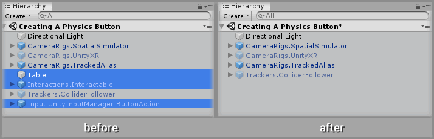
Step 2
Create a new Empty GameObject by selecting Main Menu -> GameObject -> Create Empty and rename it to ButtonContainer.
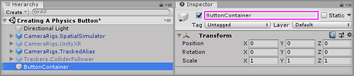
Step 3
Add a Interactions.LinearJointDrive prefab to the Unity project hierarchy by selecting GameObject -> Tilia -> Prefabs -> Interactions -> Controllables -> PhysicsJoint -> Interactions.LinearJointDrive from the Unity main top menu and drag it into being a child of the ButtonContainer GameObject.
Step 4
Select the ButtonContainer -> Interactions.LinearJointDrive -> Internal -> JointContainer -> Joint -> Interactions.Interactable -> MeshContainer -> Cube GameObject and change the Transform properties to:
- Scale:
X = 0.2, Y = 0.02, Z = 0.15
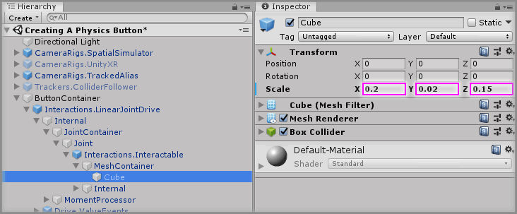
Step 5
Select the ButtonContainer -> Interactions.LinearJointDrive GameObject from the Unity Hierarchy window and on the Linear Drive Facade component set the following properties to:
- Drive Axis:
Y Axis - Start At Initial Target Value:
checked - Initial Target Value:
1 - Move To Target Value:
checked - Target Value:
1 - Drive Limit:
0.05
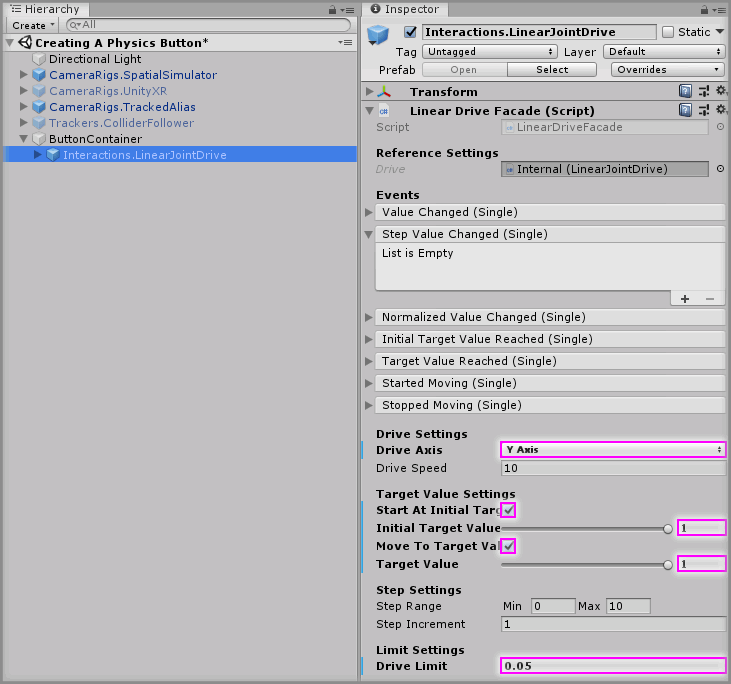
Step 6
Create a new Empty GameObject by selecting Main Menu -> GameObject -> Create Emptyand make it a child of the ButtonContainer GameObject then rename it to ActivationArea.
Add a Box Collider component (this will activate our Collider Follower) and set the Box Collider component properties to:
- Is Trigger:
checked - Size:
X = 0.25, Y = 0.15, Z = 0.2
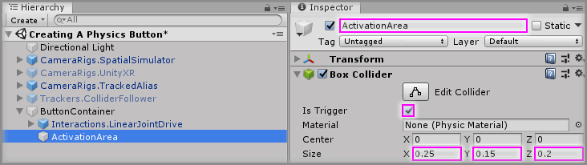
Step 7
Add a Collision Tracker component to the ActivationArea GameObject, which will track collisions against the Box Collider component. We will use this collision tracking to turn on and off our Trackers.ColliderFollower GameObject.
Select the ButtonContainer -> ActivationArea GameObject from the Unity Hierarchy window and click the + symbol in the bottom right corner of the Collision Started event parameter on the Collision Tracker component.
Drag and drop the Trackers.ColliderFollower GameObject into the event listener box that appears on the Collision Started event parameter on the Collision Tracker component that displays None (Object).
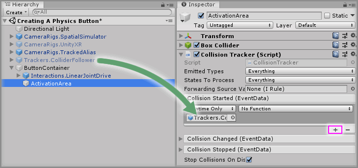
Select a function to perform when the Collision Started event is emitted. For this example, select the GameObject -> SetActive function.
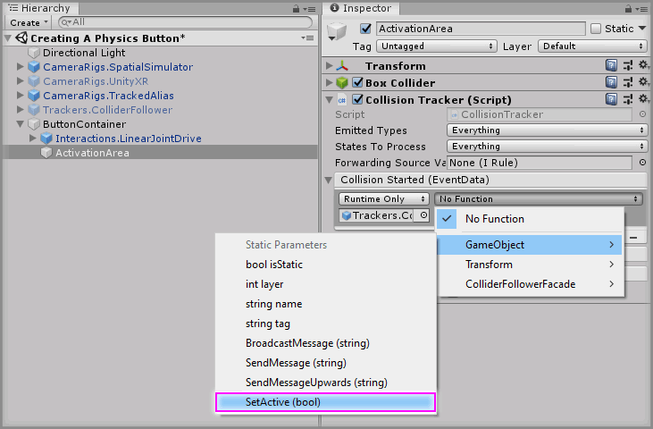
Ensure the GameObject.SetActive checkbox is checked.
Step 8
Select the ButtonContainer -> ActivationArea GameObject from the Unity Hierarchy window and click the + symbol in the bottom right corner of the Collision Stopped event parameter on the Collision Tracker component.
Drag and drop the Trackers.ColliderFollower GameObject into the event listener box that appears on the Collision Stopped event parameter on the Collision Tracker component that displays None (Object).
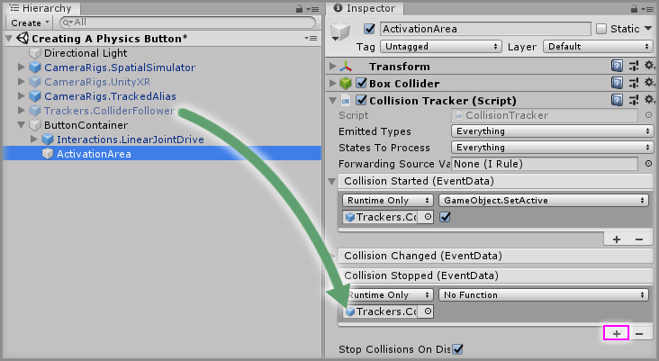
Select a function to perform when the Collision Stopped event is emitted. For this example, select the GameObject -> SetActive function.
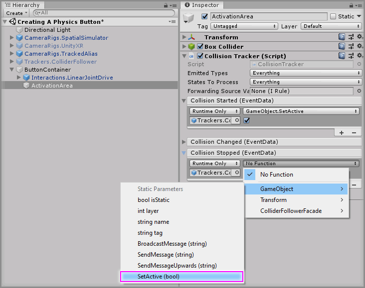
Ensure the GameObject.SetActive checkbox is unchecked.
Step 9
Select the ButtonContainer -> ActivationArea GameObject from the Unity Hierarchy window and click the + symbol in the bottom right corner of the Collision Started event parameter on the Collision Tracker component.
Drag and drop the Trackers.ColliderFollower GameObject into the event listener box that appears on the Collision Started event parameter on the Collision Tracker component that displays None (Object).
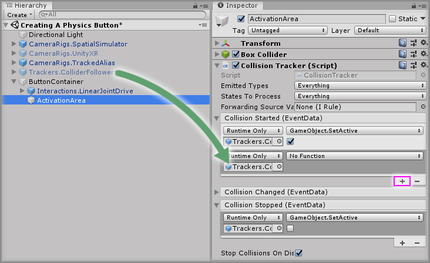
Select a function to perform when the Collision Started event is emitted. For this example, select the ColliderFollowerFacade -> SnapToSource() function.
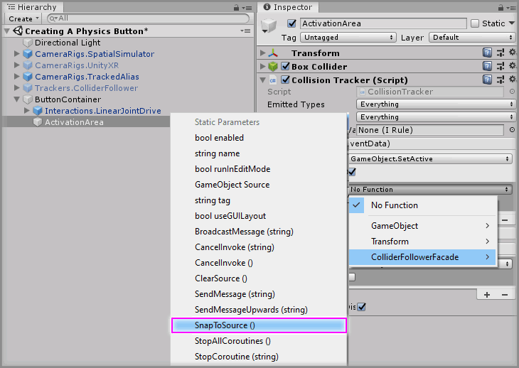
Step 10
Create a new Empty GameObject by selecting Main Menu -> GameObject -> Create Empty and make it a child of the ButtonContainer GameObject, rename it to ValidCollisions and add an Any Component Type Rule component.
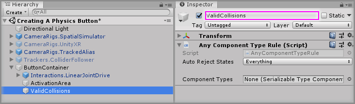
Step 11
Create a new Empty GameObject by selecting Main Menu -> GameObject -> Create Empty and make it a child of the ButtonContainer -> ValidCollisions GameObject, rename it to CollisionList and add a Serializable Type Component Observable List component.

Step 12
Select the ButtonContainer -> ValidCollisions -> CollisionList GameObject in the Unity Hierachy window then increase the List Settings -> Elements -> Size property by 1on the Serializable Type Component Observable List component.
The property will be 0 by default so change it to 1
Set Element 0 property value to InteractorFacade.
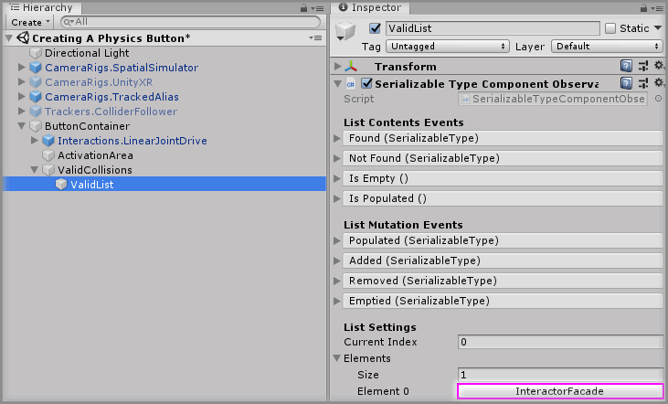
Step 13
Select the ButtonContainer -> ValidCollisions GameObject and drag and drop the ButtonContainer -> ValidCollisions -> CollisionList GameObject into the Component Types property on the Any Component Type Rule component.
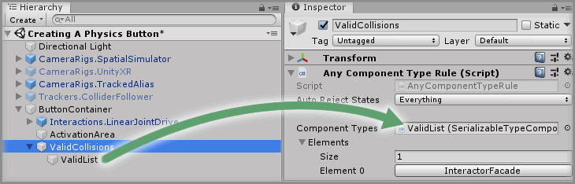
The
Serializable Type Component Observable Listcomponent will now become available to edit on theAny Component Type Rulecomponent.
Step 14
Select the ButtonContainer -> ActivationArea GameObject and drag and drop the ButtonContainer -> ValidCollisions GameObject into the Forwarding Source Validity property on the Collision Tracker component.
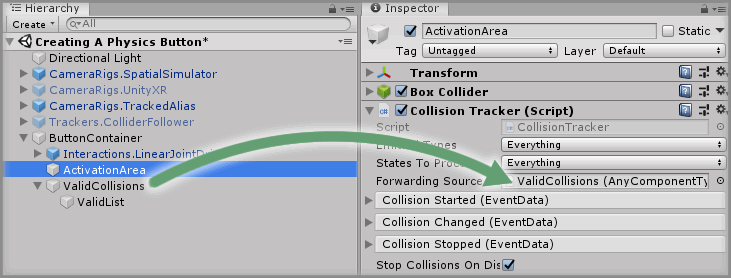
We've now set it up so the
ActivationAreawill enable theTrackers.ColliderFollowerGameObject whenever anInteractorFacadeGameObject collides with theActivationAreacollider component.
Play the scene and you will notice as you push down with the Right Controller on the button moves it down to its maximum point and releasing it moves it back to its original position.
However, our Left Controller does not seem to interact with the button at all. This is because the Adding A Collider Follower guide only sets up a Trackers.ColliderFollower for the Right Controller.
We will need to set up one for the Left Controller and add some extra logic to know when to activate the correct one.
Step 15
Let's start by renaming the existing Trackers.ColliderFollower GameObject to Right.ColliderFollower and then duplicate the Right.ColliderFollower GameObject by right clicking on the Right.ColliderFollower GameObject and selecting Duplicate from the context menu.
Rename this duplicated Right.ColliderFollower (1) GameObject to Left.ColliderFollower.
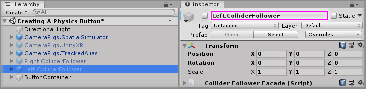
Step 16
We need to make our new Left.ColliderFollower follow the Left Controller instead of the Right Controller, so select the Left.ColliderFollower GameObject and then drag and drop the TrackedAlias -> Aliases -> LeftControllerAlias GameObject onto the Source property of the Collider Follower Facade component.
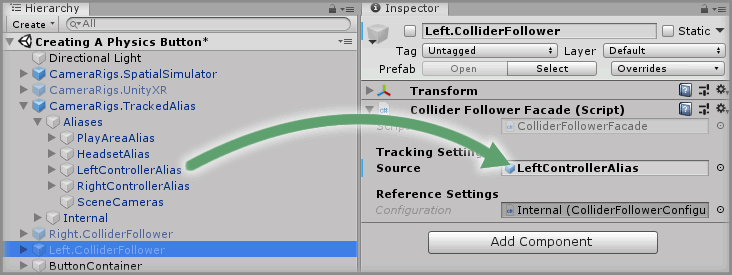
Step 17
Let's now make the correct Collider Follower enable and disable correctly depending on the Controller Alias that is actually touching the Activation Area. To do this we'll use some rules that allow us to know which Controller Alias is touching the Activation Area and be able to trigger some specific logic for each controller.
Create a new Empty GameObject by selecting Main Menu -> GameObject -> Create Empty and make it a child of the ButtonContainer GameObject and rename it to InteractorRules.
Then create a new Empty GameObject by selecting Main Menu -> GameObject -> Create Empty and make it a child of the ButtonContainer -> InteractorRules GameObject, rename it to IsLeftInteractor and add a List Contains Rule component.
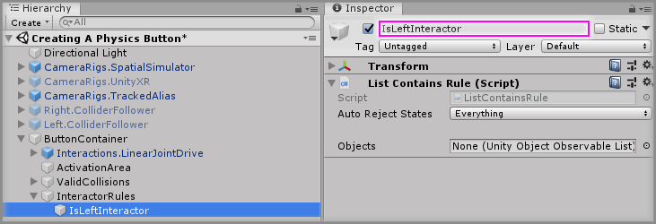
Step 18
Create a new Empty GameObject by selecting Main Menu -> GameObject -> Create Empty and make it a child of the ButtonContainer -> InteractorRules -> IsLeftInteractor GameObject, rename it to ObjectList and add a Unity Object Observable List component.
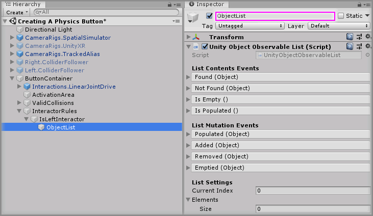
Step 19
Select the ButtonContainer -> InteractorRules -> IsLeftInteractor -> ObjectList GameObject from the Unity Hierarchy window then increase the Elements -> Size property value by 1 on the Unity Object Observable List component.
The size property will be
0by default, so change it to1.
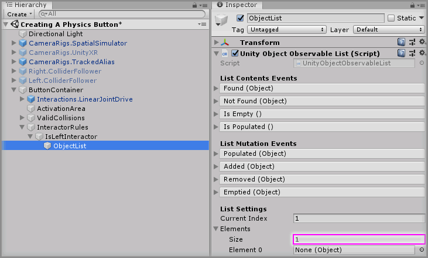
Step 20
Drag and drop the CameraRigs.TrackedAlias -> Aliases -> LeftControllerAlias -> Interactions.Interactor GameObject into the newly created Element 0 property value within Elements property on the Unity Object Observable List component.
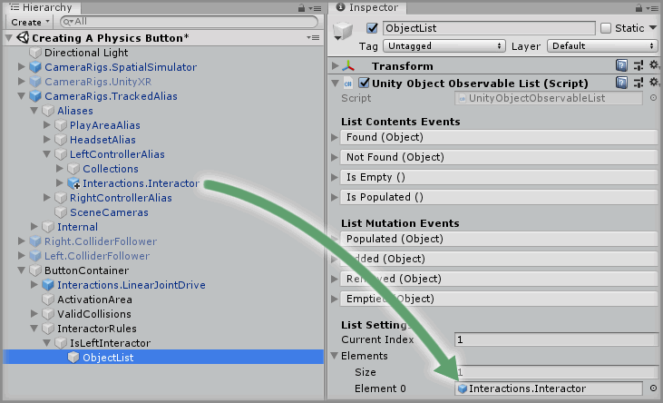
Step 21
Select the ButtonContainer -> InteractorRules -> IsLeftInteractor GameObject from the Unity Hierarchy window then drag and drop the ButtonContainer -> InteractorRules -> IsLeftInteractor -> ObjectList GameObject into the Objects property on the List Contains Rules component.
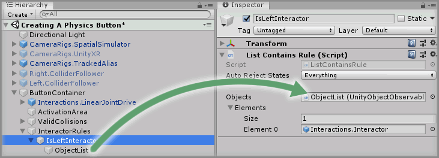
Step 22
We now have a rule set up that can help us determine whether a given GameObject is the Left Controller Interactor. We need to do the same for the Right Controller and as most of the logic is the same we can simply duplicate our Left Controller set up and just tweak it a little bit.
Select the ButtonContainer -> InteractorRules -> IsLeftInteractor GameObject from the Unity Hierarchy window and duplicate it by right clicking on the IsLeftInteractor GameObject and selecing Duplicate from the context menu.
Rename the duplcated IsLeftInteractor (1) GameObject to IsRightInteractor.
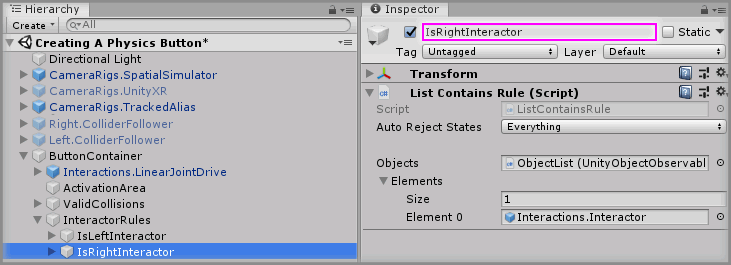
Step 23
We just need to swap over the Interactor on the List Contains Rule component on the newly created IsRightInteractor GameObject.
Select the ButtonContainer -> InteractorRules -> IsRightInteractor GameObject from the Unity Hierarchy window then drag and drop the CameraRigs.TrackedAlias -> Aliases -> RightControllerAlias -> Interactions.Interactor GameObject into the Element 0 property value within Objects -> Elements property on the List Contains Rule component.
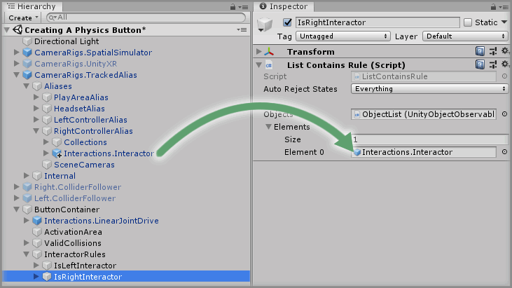
Step 24
Now we need to add some logic to figure out what we want to do with the specific Interactor collisions.
Create a new Empty GameObject by selecting Main Menu -> GameObject -> Create Empty and make it a child of the ButtonContainer GameObject, rename it to CollisionStopped then add a Notifier Container Extractor component and a Rules Matcher component.
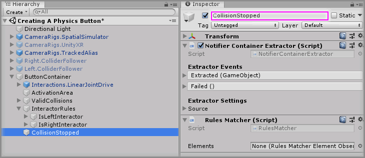
Step 25
Create a new Empty GameObject by selecting Main Menu -> GameObject -> Create Empty and make it a child of the ButtonContainer -> CollisionStopped GameObject, rename it to RuleMatcherList and add a Rules Matcher Element Observable List component.
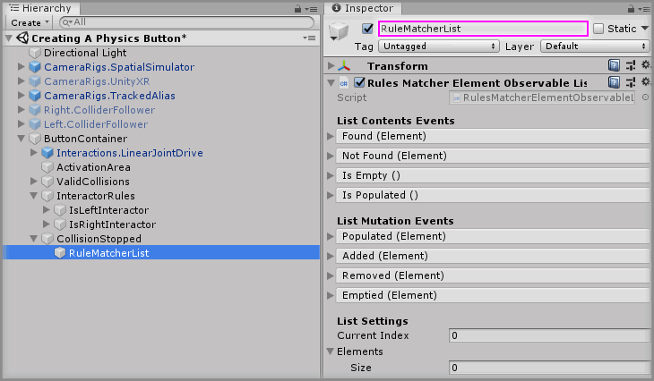
Step 26
Select the ButtonContainer -> CollisionStopped -> RuleMatcherList GameObject from the Unity Hierarchy window then increase the Elements -> Size property value by 2 on the Rules Matcher Element Observable List component.
The size property will be
0by default, so change it to2.
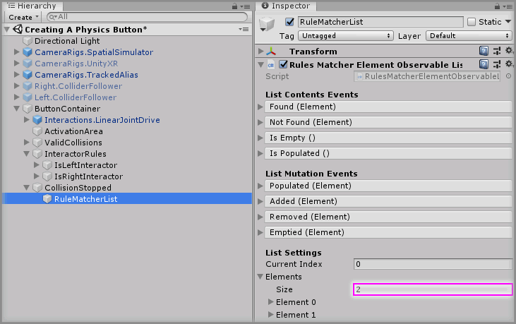
Step 27
Drag and drop the ButtonContainer -> InteractorRules -> IsLeftInteractor GameObject into the newly created Element 0 -> Rule property value within Elements property on the Rules Matcher Element Observable List component.
Then drag and drop the ButtonContainer -> InteractorRules -> IsRightInteractor GameObject into the newly created Element 1 -> Rule property value within Elements property on the Rules Matcher Element Observable List component.
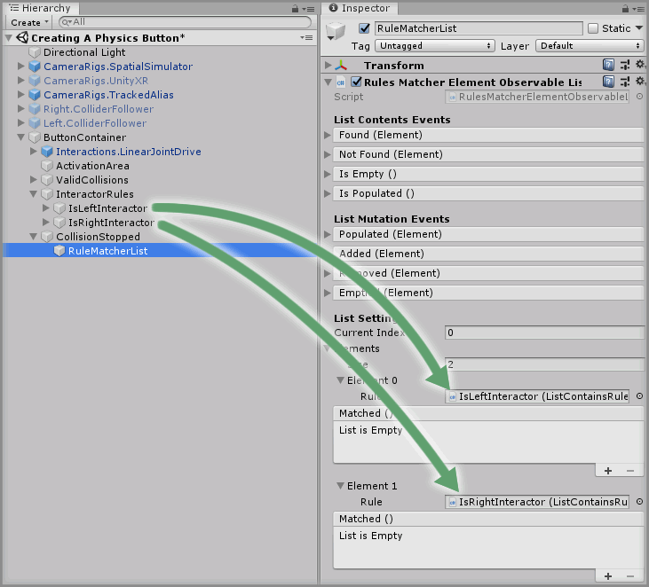
Step 28
Select the ButtonContainer -> CollisionStopped GameObject from the Unity Hierarchy window then drag and drop the ButtonContainer -> CollisionStopped-> RuleMatcherList GameObject into the Elements property on the Rule Matcher component.
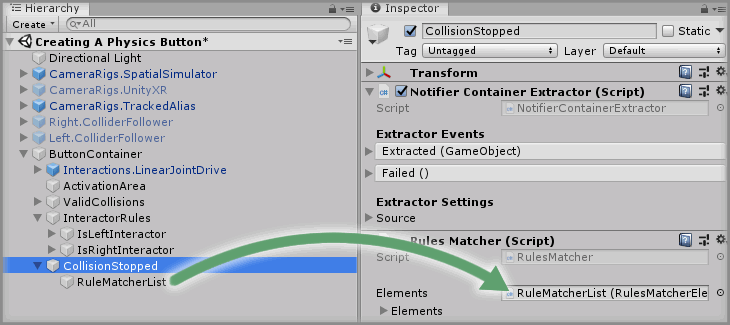
Step 29
We need to now hook up our colliding Interactor to pass to our Rules Matcher to determine what logic to run depending on the controller that is colliding.
The Collision Tracker event data contains this information but we need to extract the colliding information we're interested in. That's what the Notifier Container Extractor component will do for us.
Let's start by getting our Collision Tracker component on the ButtonContainer -> ActivationArea GameObject to call the Notifier Container Extractor component on the ButtonContainer -> CollisionStopped GameObject when the Collision Stopped event is emitted.
Select the ButtonContainer -> ActivationArea GameObject from the Unity Hierarchy window and click the - symbol in the bottom right corner of the Collision Stopped event parameter on the Collision Tracker component to remove the existing event.
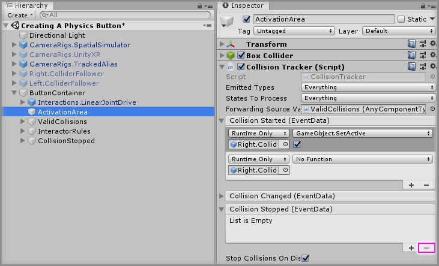
Step 30
Select the ButtonContainer -> ActivationArea GameObject from the Unity Hierarchy window and click the + symbol in the bottom right corner of the Collision Stopped event parameter on the Collision Tracker component.
Drag and drop the ButtonContainer -> CollisionStopped GameObject into the event listener box that appears on the Collision Stopped event parameter on the Collision Tracker component that displays None (Object).
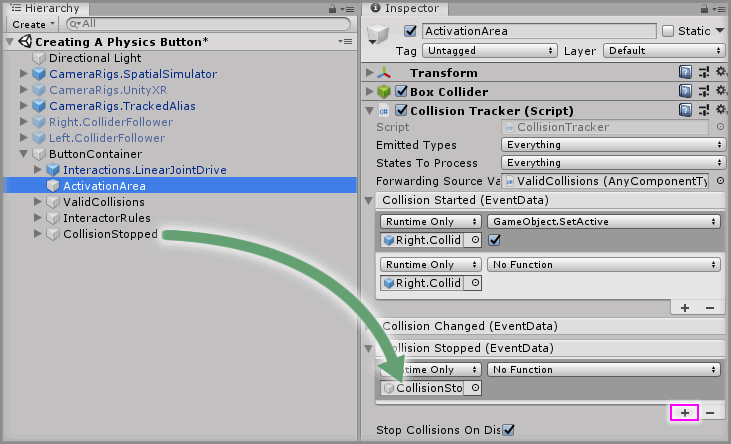
Select a function to perform when the Collision Stopped event is emitted. For this example, select the NotifierContainerExtractor -> DoExtract function (be sure to select Dynamic EventData - DoExtract for this example).
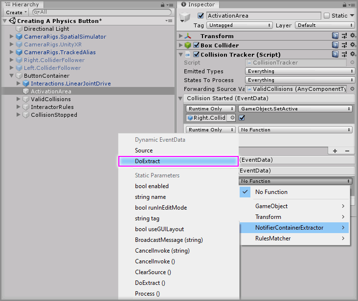
Step 31
We now simply need to tell our Notifier Container Extractor to pass the extracted collision GameObject to our Rules Matcher component.
Select the ButtonContainer -> CollisionStopped GameObject from the Unity Hierarchy window and click the + symbol in the bottom right corner of the Extracted event parameter on the Notifier Container Extractor component.
Drag and drop the ButtonContainer -> CollisionStopped GameObject into the event listener box that appears on the Extracted event parameter on the Notifier Container Extractor component that displays None (Object).
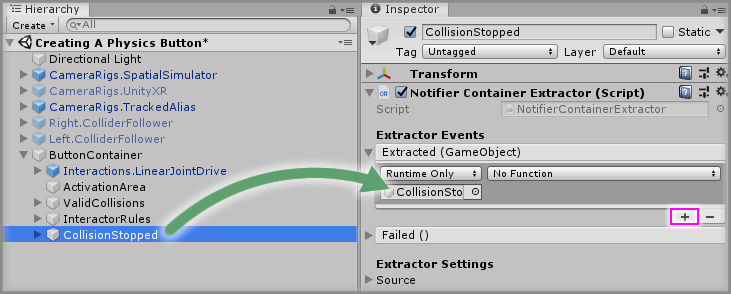
Select a function to perform when the Extracted event is emitted. For this example, select the RulesMatcher -> Match function (be sure to select Dynamic EventData - Match for this example).
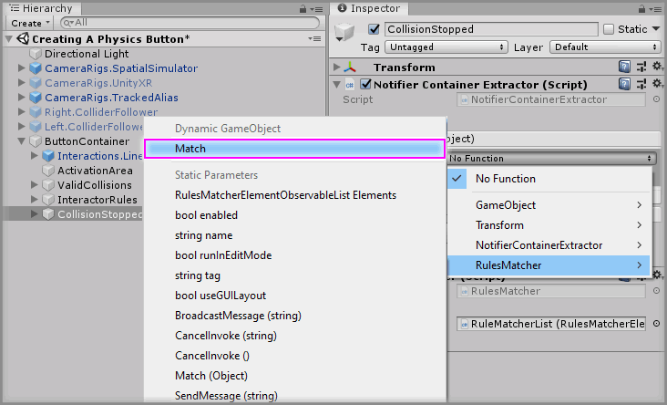
Step 32
Before we set up our rules matching logic, we're going to set up the similar logic for the Collision Started process as we can simply do this by just duplicating the ButtonContainer -> CollisionStopped GameObject.
Select the ButtonContainer -> CollisionStopped GameObject from the Unity Hierarchy window and duplicate it by right clicking on the CollisionStopped GameObject and selecing Duplicate from the context menu.
Rename the duplcated CollisionStopped (1) GameObject to CollisionStarted.
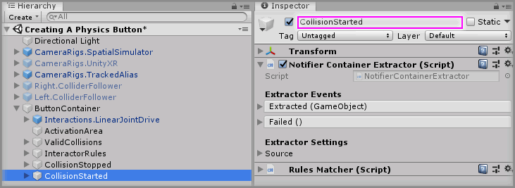
Now we just need to remove the existing Collision Started event listeners on the Collision Tracker component on the ButtonContainer -> ActivationArea GameObject. Just follow Step 29 but delete the event listeners on the Collision Started event.
Then follow Step 30 again but this time drag the ButtonContainer -> CollisionStarted GameObject into the Collision Started event parameter on the Collision Tracker component.
The CollisionTracker component on the ButtonContainer -> ActivationArea GameObject should now be set up like this:
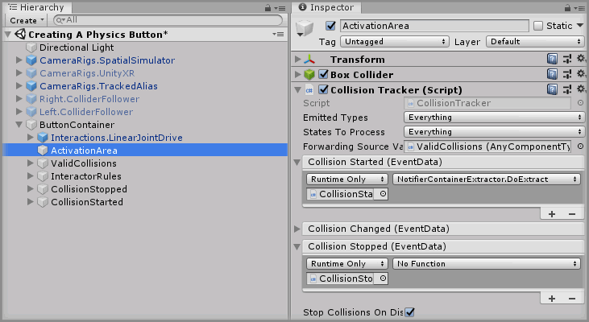
Step 33
Now we just need to set up our Rules Matcher components on the ButtonContainer -> CollisionStarted GameObject and ButtonContainer -> CollisionStopped GameObject.
Select the ButtonContainer -> CollisionStarted GameObject from the Unity Hierarchy window and click the + symbol in the bottom right corner of the Elements -> Element 0 -> Matched event parameter on the Rules Matcher component.
The Element 0 property is set up for our Left Controller Interactor so we want to drag and drop the Left.ColliderFollower GameObject into the event listener box that appears on the Matched event parameter on the Rules Matcher component that displays None (Object).
We can just follow the same logical set up as seen in Step 7 to enable the Left.ColliderFollower GameObject.
Do the same steps but in the Elements -> Element 1 -> Matched event parameter but for the Right.ColliderFollower GameObject.
The Rules Matcher component on the ButtonContainer -> CollisionStarted GameObject should now be set up like this:
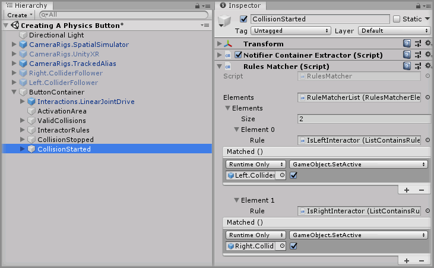
Step 34
Now let's set up the Rules Matcher component for the ButtonContainer -> CollisionStopped GameObject and again it's a similar set up to what we've already done in Step 8 but for each of the Matched events as outlined in Step 33.
Once you've done that, the Rules Matcher component on the ButtonContainer -> CollisionStopped GameObject should now be set up like this:
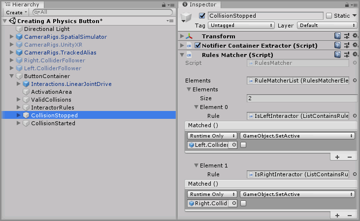
Step 35
Finally, we just need to set up the Snap To Source on each of the Collider Follower components as outlined in Step 9 but again for each of the Matched events for the Rules Matcher component on the ButtonContainer -> CollisionStarted GameObject as in Step 33.
The Rules Matcher component on the ButtonContainer -> CollisionStarted GameObject finally be set up and look like this:
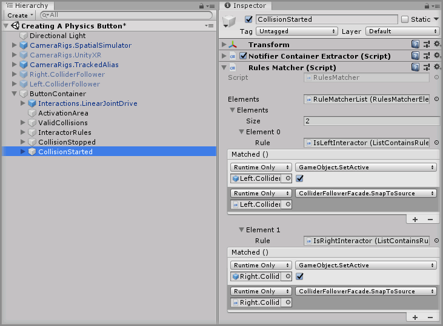
Done
Play the Unity scene and you will notice as you push down on the button with the either controller, the button moves down to its maximum point and releasing it moves it back to its original position.
You will also notice the correct Collider Follower is enabled depending on the touching controller.
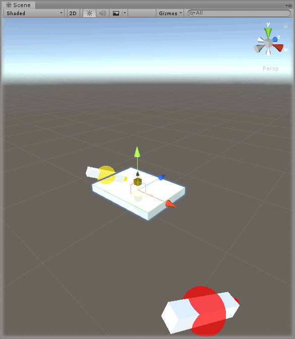